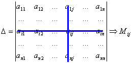

Определители n–го порядка
Число всех элементов определителя  -го
порядка равно .
-го
порядка равно .
-го
порядка равно .Минором элемента
определителя -го
порядка называется определитель порядка,
полученный из исходного вычеркиванием  -строки
и -столбца, на пересечении
которых стоит элемент .
-строки
и -столбца, на пересечении
которых стоит элемент .
-го
порядка называется определитель порядка,
полученный из исходного вычеркиванием -строки
и -столбца, на пересечении
которых стоит элемент ..
Алгебраическим дополнением элемента
называется его минор со знаком  , где –
номер строки, а – номер столбца, на
пересечении которых стоит элемент ,
, где –
номер строки, а – номер столбца, на
пересечении которых стоит элемент ,
, где –
номер строки, а – номер столбца, на
пересечении которых стоит элемент ,.